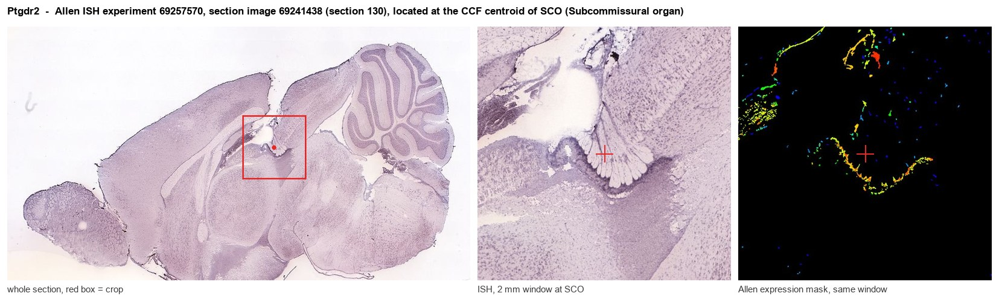
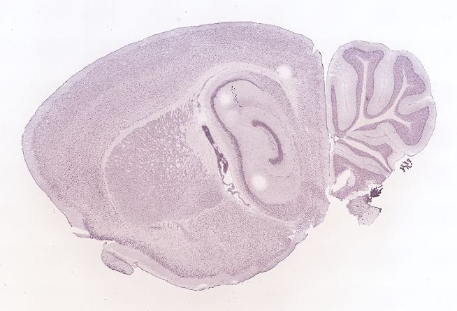
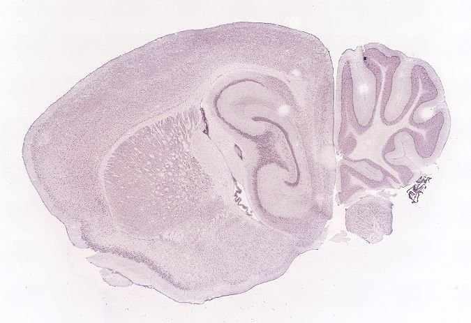
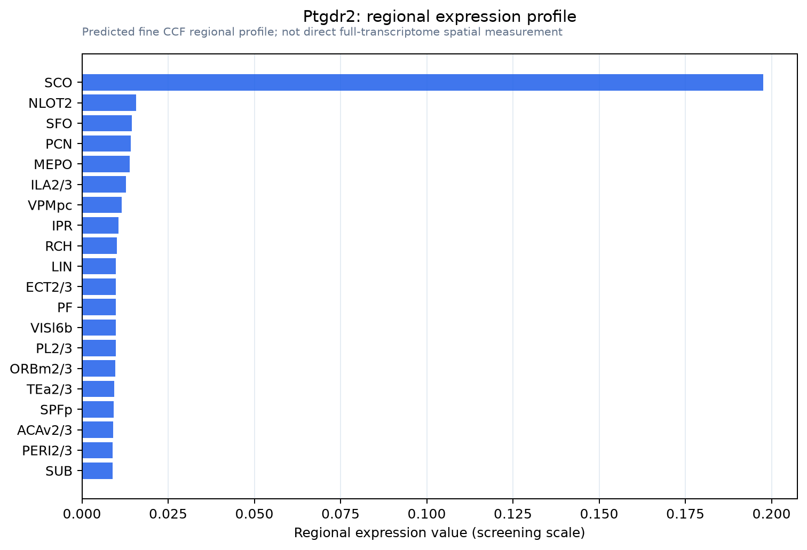

Ptgdr2
Prostaglandin D2 receptor 2 (Chemoattractant receptor-homologous molecule expressed on Th2 cells) (G protein-coupled receptor 44) (CD antigen CD294)
Spatial tier: STRICT_EXCLUSIVE · Class: GPCR · Top region: SCO (Subcommissural organ) · Positive regions: 1/554
Function in SCO: evidence, prediction, innovation
- Gene function
- Ptgdr2 encodes DP2 (CRTH2), a class-A GPCR for prostaglandin D2 that, unlike Gs-coupled DP1, belongs to the chemoattractant receptor family and couples to Gi, lowering cAMP and raising Ca2+. It drives chemotaxis and activation of Th2 cells, eosinophils, basophils and ILC2s.
- Region function
- The subcommissural organ is a secretory ependymal gland under the posterior commissure at the third-ventricle/aqueduct junction, releasing SCO-spondin into CSF to form Reissner's fibre and shaping aqueduct patency, CSF flow and axial morphogenesis.
- Published in this region
- inferred No region-specific literature found. Closest: PGD2, the most abundant brain prostanoid, is made by lipocalin-type PGD synthase in leptomeninges and choroid plexus and acts on arachnoid DP1 in CSF to promote NREM sleep (Qu et al. 2006; Ahmad et al. 2019), while CRTH2 has a CNS-inflammation role in EAE (Liu et al. 2025).
- Predicted function
- Prediction: in the CSF stream carrying L-PGDS-derived PGD2, the SCO would use DP2 as a prostaglandin sensor, cAMP suppression and Ca2+ rises modulating SCO-spondin secretion across the sleep-wake and sickness PGD2 rhythm. Knockout or fevipiprant/OC000459 should flatten circadian variation in Reissner's fibre output; DK-PGD2 should stimulate secretion.
- Innovation
- ★★★★★ 5/5 Brain PGD2 work has focused on DP1 in leptomeninges; DP2 in a CSF-secreting circumventricular organ is unstudied.
- Tools
- Ptgdr2 (CRTH2) knockout and flox mice; Sspo-Cre/Sspo-CreER; agonist 13,14-dihydro-15-keto-PGD2 (DK-PGD2); antagonists fevipiprant, OC000459 (timapiprant), ramatroban, CAY10471; Ptgds (L-PGDS) knockout mice; anti-CRTH2 antibody BM16.
- References
Direct evidence located at the region

Allen ISH experiment 69257570, section image 69241438 (section 130): the section that contains the CCF centroid of Subcommissural organ according to the Allen image-to-atlas alignment (reference_to_image), with a 2 mm window around that point. Left: whole section, red box = window. Middle: ISH signal. Right: Allen's expression-mask view of the same window. open this image in the Allen viewer
Direct spatial evidence



Regional expression figure

Predicted WMB × fine-CCF profile; not direct full-transcriptome spatial measurement.
Spatial profile
Evidence and specificity
- Evidence status
- PREDICTED_FINE
- Direct sources
- None; predicted localization only
- Exclusive threshold
- 12 positive regions out of 554
- Spatial specificity
- 0.487
- Top-region fraction
- 0.424
- Filter status
- PASS
Interpretation limits
- Cell-type-to-region projection is imputed expression, not direct spatial measurement.
- Adult reference atlases do not establish stability across age, sex, strain, state, or disease.
- Transcript abundance does not guarantee protein abundance or genetic-tool performance.